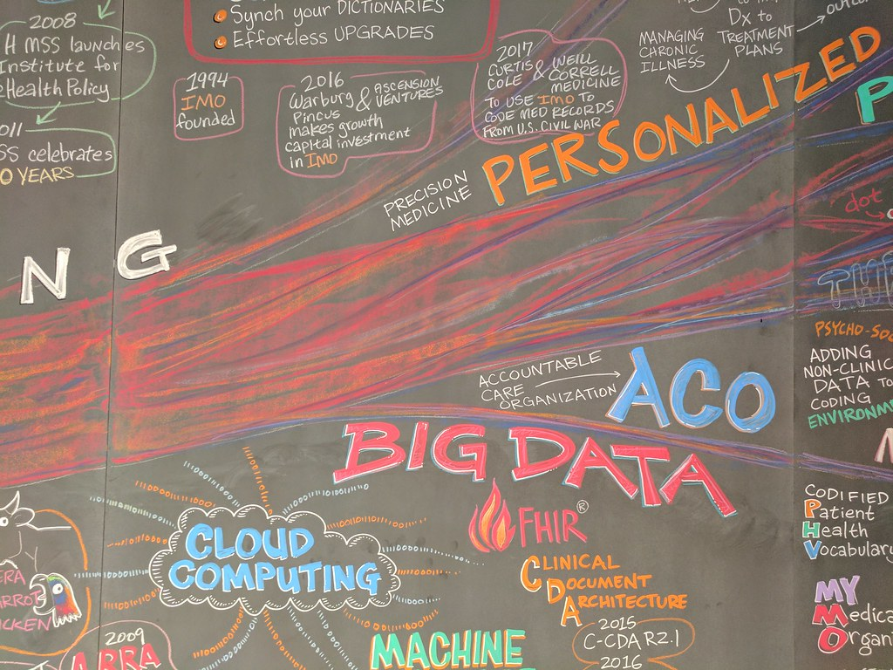

What is Cloud Computing?
First InsightsSimply described, cloud computing is the supply of computer services over the Internet ("the cloud"), including servers, storage, databases, networking, software, analytics, and intelligence, to provide speedier innovation, flexible resources, and scale economies. You normally only pay for the cloud services that you actually use, which helps you reduce operational expenses, manage your infrastructure more effectively, and scale as your business requirements change.
Why Cloud Computing ?
-
Agility
The cloud gives you easy access to a broad range of technologies so that you can innovate faster and build nearly anything that you can imagine. You can quickly spin up resources as you need them-from infrastructure services, such as compute, storage, and databases, to Internet of Things, machine learning, data lakes and analytics, and much more.
You can deploy technology services in a matter of minutes, and get from idea to implementation several orders of magnitude faster than before. This gives you the freedom to experiment, test new ideas to differentiate customer experiences, and transform your business.
-
Agility
The cloud gives you easy access to a broad range of technologies so that you can innovate faster and build nearly anything that you can imagine. You can quickly spin up resources as you need them-from infrastructure services, such as compute, storage, and databases, to Internet of Things, machine learning, data lakes and analytics, and much more.
You can deploy technology services in a matter of minutes, and get from idea to implementation several orders of magnitude faster than before. This gives you the freedom to experiment, test new ideas to differentiate customer experiences, and transform your business.
-
Elasticity
With cloud computing, you don't have to over-provision resources up front to handle peak levels of business activity in the future. Instead, you provision the amount of resources that you actually need. You can scale these resources up or down to instantly grow and shrink capacity as your business needs change.
-
Cost savings
Cloud computing eliminates the capital expense of buying hardware and software and setting up and running on-site datacenters—the racks of servers, the round-the-clock electricity for power and cooling, and the IT experts for managing the infrastructure. It adds up fast.
-
Global scale
The benefits of cloud computing services include the ability to scale elastically. In cloud speak, that means delivering the right amount of IT resources—for example, more or less computing power, storage, bandwidth—right when they're needed, and from the right geographic location.

Types of cloud computing
Public cloud
Public clouds are owned and operated by a third-party cloud service providers, which deliver their computing resources, like servers and storage, over the Internet. Microsoft Azure is an example of a public cloud. With a public cloud, all hardware, software, and other supporting infrastructure is owned and managed by the cloud provider. You access these services and manage your account using a web browser. Learn more about the public cloud.
Private cloud
A private cloud refers to cloud computing resources used exclusively by a single business or organization. A private cloud can be physically located on the company's on-site datacenter. Some companies also pay third-party service providers to host their private cloud. A private cloud is one in which the services and infrastructure are maintained on a private network. Learn more about the private cloud.
Hybrid cloud
Hybrid clouds combine public and private clouds, bound together by technology that allows data and applications to be shared between them. By allowing data and applications to move between private and public clouds, a hybrid cloud gives your business greater flexibility, more deployment options, and helps optimize your existing infrastructure, security, and compliance. Learn more about the hybrid cloud.
Types of cloud services
Infrastructure as a Service (IaaS)
IaaS contains the basic building blocks for cloud IT. It typically provides access to networking features, computers (virtual or on dedicated hardware), and data storage space. IaaS gives you the highest level of flexibility and management control over your IT resources. It is most similar to the existing IT resources with which many IT departments and developers are familiar.
Platform as a Service (PaaS)
PaaS removes the need for you to manage underlying infrastructure (usually hardware and operating systems), and allows you to focus on the deployment and management of your applications. This helps you be more efficient as you don’t need to worry about resource procurement, capacity planning, software maintenance, patching, or any of the other undifferentiated heavy lifting involved in running your application.
Software as a Service (SaaS)
SaaS provides you with a complete product that is run and managed by the service provider. In most cases, people referring to SaaS are referring to end-user applications (such as web-based email). With a SaaS offering, you don’t have to think about how the service is maintained or how the underlying infrastructure is managed. You only need to think about how you will use that particular software.